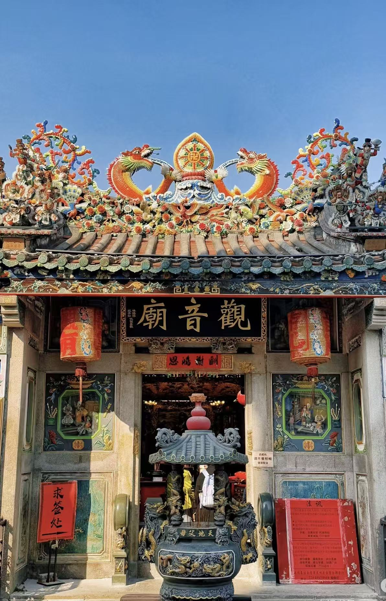

Religious Beliefs and Ancestral Worship
Guangdong immigrants transplanted their spiritual landscape to the U.S. through a unique "Temple-Association" model. This integration of sacred and secular spaces—exemplified by the Tin How Temple in San Francisco (est. 1852)—served as a vital cultural nexus. Central to this spiritual ecosystem were specific deities chosen for the immigrant experience. Mazu (Tin How), originally a mortal woman from Fujian during the Song Dynasty, was deified into the Goddess of the Sea. For immigrants who survived the perilous voyage across the Pacific, she was the supreme guardian of wanderers and those drifting on the ocean.
Equally significant was Guandi, the God of War, who embodied righteousness, loyalty, and justice. The Cantonese reverence for Guandi is deeply rooted in their history as a migratory group moving south from the Central Plains. Throughout their historical migrations, they credited Guandi's justice for their protection; thus, wherever they established a new foothold, Guandi was enshrined as the guardian who had accompanied them from their ancestral lands.
However, beyond the worship of deities, the most profound ritual was Ancestral Worship. For the Cantonese, venerating one's lineage was the "priority" during festivals, often surpassing the worship of gods. As people living in a foreign land, this ritual was an act of not forgetting one's roots. Families would respectfully bring out ancestral spirit tablets and burn incense, not merely to pray, but to "report" to their forebears.
They would inform their ancestors that they had successfully settled down and continued the family line in the West. This ritual was a profound expression of gratitude, acknowledging that their survival was a blessing from the past. This intergenerational gratitude, passed down through the burning of incense, formed the core of a distinctly Cantonese culture of remembrance, allowing the community to maintain its "root" while navigating the challenges of a new world.


Cantonese Cuisine
The evolution of Cantonese cuisine in the West is a journey from desperate survival to cultural dominance. During the Chinese Exclusion Act era, the restaurant business was one of the few legal loopholes for employment. From a handful of eateries in the 1850s to over 50,000 across the U.S. today, Cantonese food became the economic bedrock of the diaspora. Immigrants adapted their complex culinary heritage into dishes like "Chow Mein" and "Chop Suey," leading to the linguistic integration of terms like "Dim Sum," "Wok," and "Bok Choy" into the global lexicon.
This influence is most profound in the tradition of Yum Cha (drink morning tea with dim sum). Rooted in the classic "One Cup, Two Pieces" custom, a pot of tea with two baskets of dim sum, this practice is far more than a brunch. It embodies the art of "slow living." This ritual acts as a sanctuary from the rush of the outside world, inviting people to pause, sip, and connect over hot tea. By turning a simple meal into a shared experience of leisure, Yum Cha has evolved into a global staple, proving that the most meaningful cultural exchange happens not just through food, but through the time spent enjoying it.
The Lion Dance and Dragon Lanterns
The Cantonese Lion Dance has long been regarded as a lucky symbol capable of driving away evil spirits and bringing good luck. As a unique mix of martial arts, dance, and music, it represents the community's energetic spirit, a lively contrast to the quiet soul of the temple.
For immigrants, this tradition was more than just holiday entertainment; it was an active ceremony that claimed "public space" for an excluded community. Accompanied by the loud beat of drums and cymbals, the Lion Dance announced the Chinese presence in Western cities, turning quiet neighborhoods into vibrant cultural scenes. The main act of Cai Qing (plucking the greens), where the lion "eats" a lettuce head containing a red envelope, serves as a strong symbol of the immigrant spirit. It is a skillful performance meant to bring wealth, representing the courage needed to grab opportunities in a new land.
Along with this is the Dragon Lantern parade. While the Lion highlights individual skill and agility, the Dragon requires dozens of people moving together as one, symbolizing the need for teamwork to survive. Together, these performances turned city streets into stages for celebration, driving away bad luck and social pressure, and welcoming good fortune.

(YouTube)

Cantonese Opera
Cantonese Opera serves as a classic stage art that mixes singing, speaking, acting, and acrobatic fighting, combined with music, costumes, and makeup. It created a unique atmosphere known as the "Commoner's Symphony," where the audience would enjoy snacks while watching the show. This accessible and communal atmosphere allowed the opera to quickly weave itself into the fabric of daily life, offering spiritual comfort to early immigrants.
The opera arrived with the first wave of Cantonese immigrants. The first troupe, Hong Fook Tong, began performing in San Francisco in 1852. Over the next fifty years, the city saw the opening of countless theaters. During the first golden age in the 1870s, San Francisco's Chinatown had four theaters operating at once. By the second golden age in the 1920s, the Great Star Theater and the Great China Theater opened within a year of each other. Both venues had over 700 seats and hosted daily performances.
Print media played a crucial role in this success. With four daily Chinese newspapers in San Francisco, the press helped promote these shows. These theaters played a vital role in community life. They were not just for entertainment; they created a space for Cantonese merchants and the public to connect, shaping a modern and culturally rich image of Chinatown.
Martial Arts Cinema and "Kung Fu"
The global success of "Kung Fu" comes from the survival needs of the Cantonese people. Its roots go back to the chaotic time between the Ming and Qing dynasties, when soldiers running from the war brought fighting skills south to Guangdong. In a time of constant war and social unrest, made worse by the Opium Wars, martial arts were not a sport, but a tool for survival. These skills became popular among ordinary people, becoming a key way for workers and citizens to protect themselves in a dangerous world.
Hong Kong movies later turned these local traditions into a genre focused on justice and community. The success of the word "Kung Fu," which comes directly from Cantonese, shows how this culture is linked to global pop culture. From the "Kung Fu Craze" started by Bruce Lee in the 1970s to the action scenes in The Matrix designed by Yuen Woo-ping, Hong Kong cinema shared more than just movies; it shared a "body language." This change through movies turned a local survival skill into a worldwide symbol of strength and discipline, placing Cantonese culture into the global story.